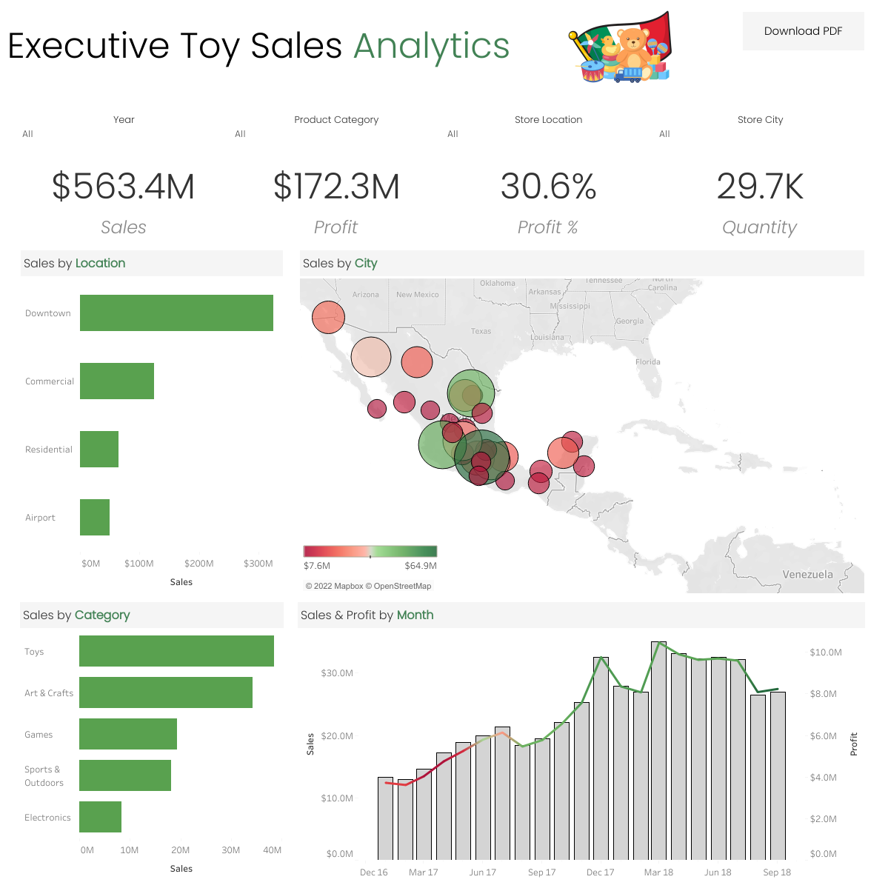
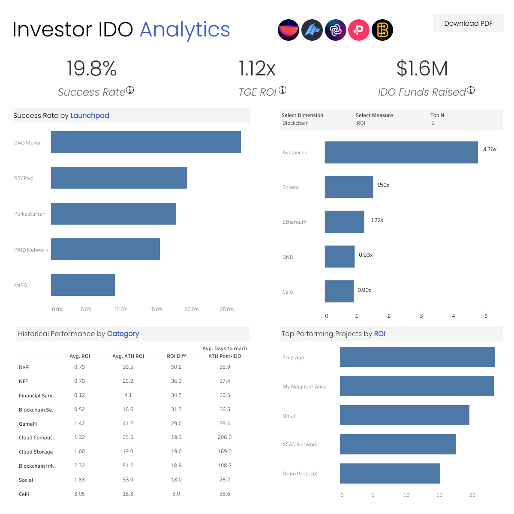
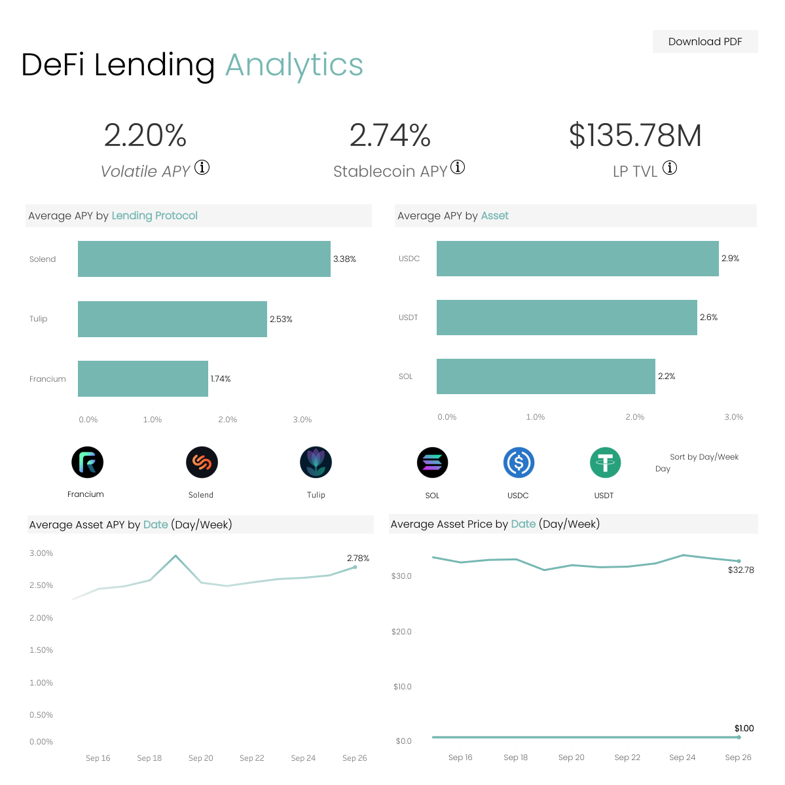

Toy Sales in Mexico
This is a project that utilizes a sample dataset with multiple tables detailing retail-based stores that focus on selling toys in Mexico.
The data is split by its locations, cities, and stores with their many products being filtered by categories. A monthly trend analysis showcases the overall positive and negative trajectories of sales and profits.
Github Repo/Docs
Interactive Tableau Dashboard

IDO Launchpad
This is a project aimed towards analyzing the many characteristics that make up IDOs within launchpads to determine whether or not they are profitable due to their highly speculative nature.
Characteristics revolve on how a project is considered to be successful, their current TGE ROI, their ATH ROI, funds raised per IDO, total funds raised, their marketcap, trading volume, etc.
Github Repo/Docs
Interactive Tableau Dashboard

DeFi Lending Protocol
This project analyzes the comparison in yield potential when lending assets between different lending protocols and asset types within the Solana blockchain.
A data scraping script is used to automate the gathering of the yield potential data points every 15 minutes and is then filtered by a daily and weekly average basis.
Github Repo/Docs
Interactive Tableau Dashboard
{kind=link}
{kind=link}
{kind=link}
{kind=link}